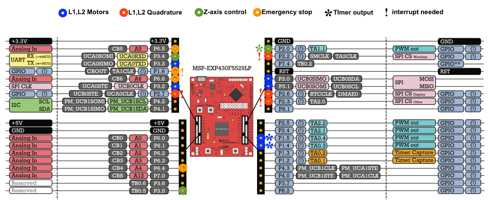

Documentation for the Compact SCARA
This is the documentation for the compact Selective Complicance Robot Arm (SCARA) project. In the following, L1 refers to the "brachium", i.e.,the first arm segment, and L2 refers to the "fore-arm", i.e., the second arm segment. Each arm segment is driven by a separate motor, and its angular position is measured via quadrature decoding.
MSP430 Resources
The compact SCARA is controlled by the msp430 f5529 microcontroller on an MSP-EXP430F5529 launchpad evaluaton board. The following is a list of the timers, pins, and interrupts used by the compact SCARA.
Motors
Pulse Width Modulation (PWM) is used to control the drive strength to the motors. Pulse width timing is done with timer A 0, using its associated interrupt. Thus, these pins need to be able to output a timing signal.
- L1 is controled by CCR3 on P1.4
- L2 is controlled by CCR4 on P1.5
Direction of movement is controlled by outputs to the selection pins on the H-bridge motor driver. When INA is high and INB is low, the connected motor turns counter-clockwise; when INA is low and INB is high, the motor turns clockwise. Be aware that the motor for L2 is mounted upside down relative to the motor for L1. In the code, the meaning of clockwise and counter-clockwise for L2 is inverted so that clockwise and counter-clockwise are always defined relative to a position above the SCARA arm. INA and INB for both motors are done using pins connected to port 3.
- INA L1 on P3.0
- INB L1 on P3.1
- INA L2 on P3.2
- INB L2 o P3.3
Quadrature Decoding
Quadrature decoding is done using pins on port2. Each motor has two quadrature channels, channel A and channel B, which are monitored on the port 2 interrupt. As for the motors, the inversion of the encoder for L2 is accounted for in the code so that, for both motors, counts become more positive with counter-clockwise rotation defined from a perspective above the SCARA arm.
- Chan A L1 on P2.2
- Chan B L1 on P2.3
- Chan A L2 on P2.6
- Chan B L2 on P2.7
The 4 states of the quadrature encoder are defined by the high and low states of channel A and channel B:
Encoder State = 0 to 3
A ____|--------|________|----
B _________|--------|________
0 1 2 3 0 1
Z-axis Control
The Z-axis is controlled using a steper motor with a motor driver that has STEP, DIRECTION, and ENABLE inputs. The steps are generated using Timer A 1 and uses the Timer A 1 interrupt to track position. The direction and enable are controlled with GPIO outputs.
- Z-axis STEP on 2.0
- Z-axis DIRECTION on P3.4
- Z-axis ENABLE on P3.5
Emergency Stop and Limit Switches
The emergency stop system consists of four limit switches, a physical emergency stop button, and an optoisolator used as a GPIO-driven switch triggerable from software, all connected in series to a physical latching circuit. When any switch in the series is interrupted, even momentarily, output is latched low until a reset input is pulsed from high to low to high. The output of the latch goes directly to the enable outputs of the arm drive motors and the Z stepper motor, so they are immediately stopped. The stopped signal from the latch is reset by a GPIO output from the microcontroller. The emergency stop input is done on port 1, using the port 1 interrupt. The other signals are done on port 6
- Emergency Stop input on P1.6
- Emergency Stop reset on P6.5
- Software Stop on P6.6
- Emergency Stop LED on P6.1
Movement Timing Loop
The timing loop uses no pins, but does make use of Timer B.
Tool Control
Given that it is difficult to predict what tools might be used with the compact SCARA, care was taken to leave as many resources free for tool usage as possible. Interrupt enabled pins are available on port1 and port 2. Timer A 2 and its pins are left untouched for tool use. The pins for the I2C port have not been used for GPIO and are available for I2C controlled hardware on a tool.

Figure 1: Pin usage on the MSP-EXP430F5529 launchpad evaluaton board for the different functional modules of the compact SCARA. Pins used are circled with a colour corresponding to the functional module (See legend). Pins using PWM ouput are marked with an asterisk, and pins using an interrupt are marked with an exclamation point. Uncircled pins are available for use by a tool. Modified from Texas Instruments slau536.
Code Modules